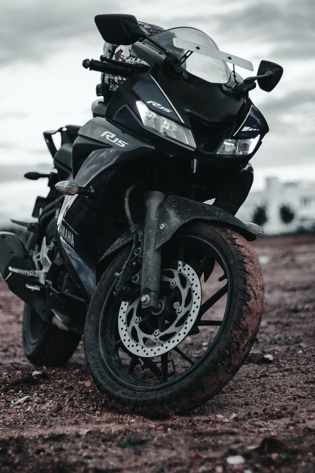
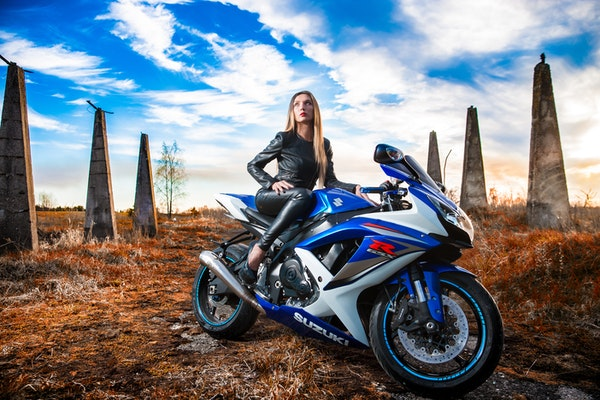

Engine and Performance Powering the latest R15 V3. 0 is an updated 154.9cc, single-cylinder, 4-stroke, liquid-cooled, SOHC engine which now produces a max power of 19.30PS @ 10,000rpm which is 2.5 PS more than the previous version, and peak torque of 15Nm @ 8,500rpm, mated to a 6-speed gearbox. Engine: 155 cc Power: 18.6 PS ABS: Dual Channel
onda CBR150R Repsol Bike Price in Bangladesh 2021. Which Engine Type is 4 Stroke, 4 Valve, DOHC. This bike is powered by the 149.16 (cc) Engine. Honda CBR150R Repsol Generates Maximum Power 12.6 KW @ 9000 rpm and it's Maximum Torque is 13.7 Nm @ 7000 rpm. Transmission duties are taken care of by a 6 Speed Gearbox. Honda claims that the bike offers a mileage of 40 Kmpl (approx). Honda CBR150R Repsol Front Suspension is Telescopic Suspension and Rear Suspension is Monosock Coil. Honda CBR150R Repsol Price is 452,000.00 Taka (approx).

Powering the bike is a inline four-cylinder 999cc, 16-valve engine producing a maximum of 199bhp. With 117.6Nm of torque on offer, Suzuki offers the bike with a six-speed gearbox, which powers the rear wheel. ... The Suzuki GSX-R 1000 is available in two colours: metallic triton blue and metallic mat black. Max Torque: 117.60 Nm Engine CC: 999.0 cc Max Power: 199.00 bhp
 About us contact Facebook